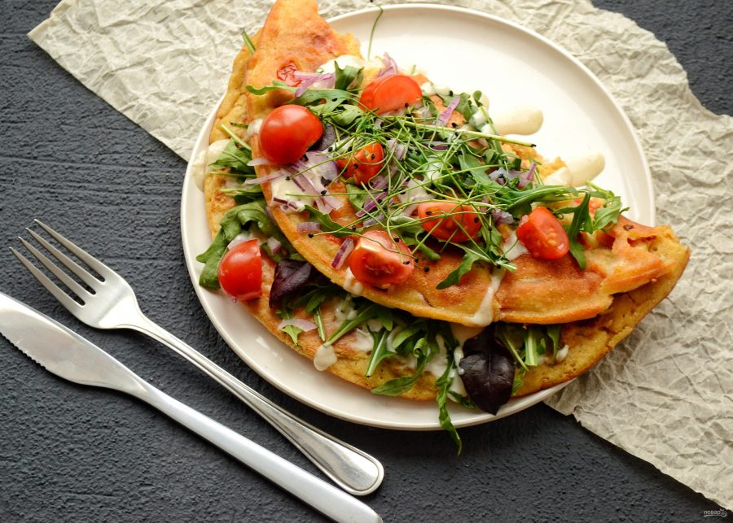

Традиционное веганство
По традиции суть веганства заключается в том, чтобы не навредить живому существу, поэтому все виды мяса, рыбы, птицы, молочная продукция, яйца исключаются из рациона. Под запрет попадают также любые добавки или красители, добытые путем эксплуатации животного (например мёд, кармин и желатин).
Веганство также полезно и для здоровья. Правильно сбалансированный рацион вегана признан одним из способов лечения болезней онкологии, сердечно-сосудистых недугов и многого другого.

Сыроедение
Сыроедение — это целая отдельная глава. Ещё его называют живым питанием. Сыроедческий тип питания исключает из рациона все продукты животного происхождения, а пища никогда не проходит термическую обработку. Допускается сушка фруктов и овощей при температуре не выше 40 градусов, поскольку считается, что при более высокой температуре погибают многие микроэлементы, поэтому пища отныне не может считаться живой.
Сыроедение не является скудным типом питания, как многие привыкли считать. Существует множество вкусных рецептов сыроедческой кухни. Можно проращивать зёрна, употреблять орехи, сухофрукты, готовить даже супы, каши, смузи, да и в целом на прилавках изобилие фруктов и овощей, можно ничего не готовить и уже вкусно.
Сыроедение, так же как и веганство, используется для лечения и профилактики многих заболеваний. Данный тип питания считается наиболее рациональным для человеческого организма.
Фрукторианство
Фрукторианство, наверное, самый сладкий тип сыроедческого питания. Фрукторианцы питаются фруктами в большем количестве, чем другими плодами. Вообще, люди на фруктоедении употребляют в пищу все плоды растений и зелень. Иногда в рационе остаются орехи и семена, но чаще всего их не относят к этому типу питания или же употребляют в зелёном, сочном виде. Плодовые овощи и зелень довольно важно включать в свои приёмы пищи хотя бы на ранних стадиях. К плодам относят, например: огурцы, помидоры, сладкий перец; но корни растений и другие важные для их жизни части не употребляют как пищу на данном этапе.
Есть мнение, подкреплённое различными исследованиями, что фрукторианство — видовое питание человека. С анатомической точки зрения, учитывая все процессы, происходящие в организме, можно считать человека плоДоядным.
Марва Вагаршаковна Оганян, биохимик, врач-эколог, полностью поддерживает и предлагает к практике данный вид питания. При изучении книг Марвы Вагаршаковны, становится понятно, в чём преимущество свежих фруктов над другими живыми продуктами.
Моноедение
Вид сыроедения, когда за один приём пищи съедается какое-то количество одного продукта. Например, несколько помидоров или бананов на обед, несколько груш или слив на ужин. Моноедение принято считать полезным, благодаря наиболее эффективной усвояемости продуктов за один приём пищи. Моноеды уверены, что лучшей комбинации микро- и макроэлементов, витаминов, чем те, что природа уже включила в продукт, быть не может, поэтому нет необходимости ничего добавлять или смешивать. Несколько приёмов пищи полностью обеспечивают организм необходимыми элементами, почти не зашлаковывая его инородными веществами. Минимальные затраты энергии на переваривание пищи позволяют процессам самовосстановления не прекращаться, что обеспечивает высокий иммунитет. Сыроеды крайне редко болеют, а сам процесс болезни, если и начинается, то протекает в лёгкой форме, без последствий.
Также немного о типах вегетарианства
Лакто-вегетарианство
Лакто-вегетарианцы исключают из своего рациона все продукты животного происхождения, кроме молочных. Молочные продукты на данном этапе остаются как основной источник белка.
Лакто-ово-вегетарианство
(Или традиционное вегетарианство) - тип вегетарианства, не исключающий молочные и яичные продукты. Самый простой в плане перехода и практики. Лакто-ово-вегетарианство считается самым нестрогим.
Ово-вегетарианство
Тип вегетарианства, исключающий все продукты животного происхождения, кроме яиц. Как и лакто-вегетарианцы, ово-вегетарианцы убеждены в необходимости потребления животного белка, в частности яичного.
Важно заметить, что лёгкость перехода на какой-либо тип вегетарианства не указывает на превосходство одного над другим. Просто на данном этапе вашему организму определённый тип питания наиболее близок.